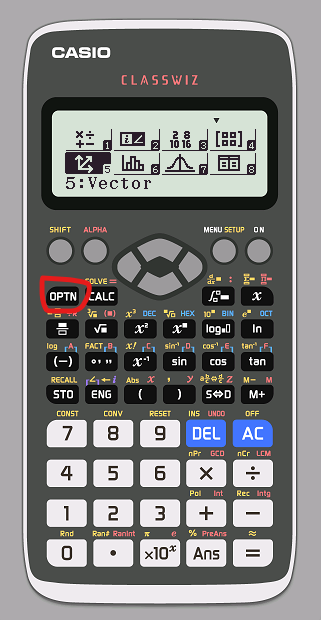

| Quảng cáo |

Đầu tiên, để tạo các vector, ta nhấn tổ hợp MODE 5
- Sau đó chọn vector ta muốn đặt (1, 2, 3, 4 tương ứng với các vector A, B, C, D)
- Sau khi chọn vector thì chọn số chiều (nhấn 2 hoặc 3), chủ yếu chọn 3 chiều vì các bài toàn hệ trục Oxyz
- Sau đó nhập các tọa độ của vector
- Nếu muốn tạo thêm vector hoặc ghi đè lên các vector đã có thì nhấn OPTN -> rồi chọn vector để thêm/thay đổi
- Nếu muốn chỉnh lại tọa độ của các vector thì nhấn OPTN -> 2 rồi chọn vector để đổi tọa độ
Muốn thực hiện các phép tính với vector, ta làm như sau:
- Nếu muốn tính độ dài vector
- Nhấn SHIFT -> hyp (Abs) để chọn trị tuyệt đối
- Nhấn SHIFT -> 5 rồi chọn 3, 4 hoặc 5 tương ứng với vector A, B, C (cần có tọa độ từ trước)
- Đáp án sẽ ra một số thực
- Nếu muốn cộng (hoặc trừ) hai vector
- Nhấn OPTN rồi chọn 3, 4, 5 hoặc 6 tương ứng với vector A, B, C, D (cần có tọa độ từ trước)
- Nhấn dấu + (hoặc -)
- Nhấn OPTN rồi chọn vector còn lại
- Đáp án sẽ ra một vector
- Nếu muốn tính tích có hướng hai vector (cross product)
- Nhấn OPTN rồi chọn 3, 4, 5 hoặc 6 tương ứng với vector A, B, C, D (cần có tọa độ từ trước)
- Nhấn dấu x (dấu nhân)
- Nhấn OPTN rồi chọn vector còn lại
- Đáp án sẽ ra một vector
- Nếu muốn tính tích vô hướng hai vector (dot product)
- Nhấn OPTN rồi chọn 3, 4, 5 hoặc 6 tương ứng với vector A, B, C, D (cần có tọa độ từ trước)
- Nhấn OPTN, nhấn xuống rồi chọn 2
- Nhấn OPTN rồi chọn vector còn lại
- Đáp án sẽ ra một số thực
- Nếu muốn tính góc giữa hai vector (angle)
- Nhấn OPTN, nhấn xuống rồi chọn 3
- Nhấn OPTN rồi chọn 3, 4, 5 hoặc 6 tương ứng với vector A, B, C, D (cần có tọa độ từ trước)
- Nhấn SHIFT -> ) (để tạo dấu phẩy)
- Nhấn OPTN rồi chọn vector còn lại
- Đáp án sẽ ra số (nhớ check đơn vị góc)
Side note: chỉ nên bấm máy những bài tọa độ quá to hoặc cần sử dụng một vector nhiều lần. Nếu không có những cái trên thì tính tay vẫn nhanh hơn (có thể bấm máy để check lại cũng được)
|
Quảng cáo |